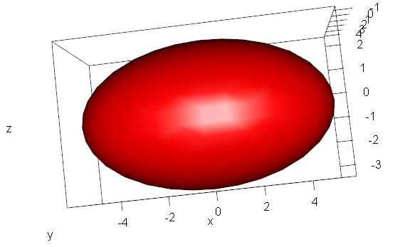
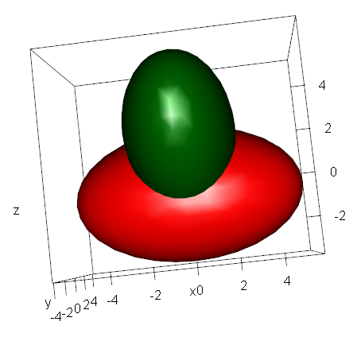
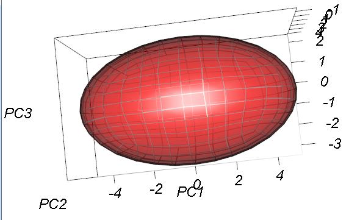
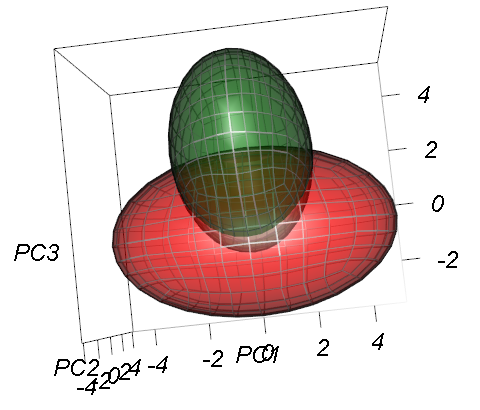

Plotting MVE in R
by
Sergio Estay
Email:Sergio.estay@gmail.com
To create a nice plot of the ellipsoid representing N we can take advantage of R and its libraries. We need to install and load the libraries cluster and rgl.
> install.packages('rgl')
> library(cluster)
> library(rgl)
First, you have to create the background and N's for the species of your interest in NicheA. The procedure is available in the NicheA manual.
Inside the folder containing the information of your N's you can find a file named “value.txt” containing the coordinates of your presence points in the background. We will use this files to construct and plotting the ellipsoids in R. In this example, I will use two species to visualize niche overlap.
Loading file sp1 and sp2 in R in format “matrix”:
> M2<-as.matrix(read.table('/path_to_the_folder_2/value.txt', dec='.', sep=',', header=TRUE))
Estimating the MVE for each species using the function “ellipsoidhull” in package cluster
> E2<-ellipsoidhull(M2)
Objects E1 and E2 belong to class Ellipsoid. These objects contain a list of geometric characteristics of the ellipsoids. For us the important components are the centroid and the covariance matrix.
Plotting E1 and E2 using the rgl package and the information contained in the ellipsoids.
Plotting E1 with functions “plot3d” and “ellipse3d” (Fig.1)

Plotting E2 in the same box using the option “add” (Fig.2)

This is the basic way to plot the ellipsoids in R. Package rgl allow us to manipulate the plot interactively using the mouse, so we can find the best angle to visualize the plot.
Now, let us to add some nice graphics by taking advantage of the options in the rgl package. You can find information about how to modify axis, text, fonts, etc. in the vignettes associated to the functions “plot3d” and “par3d”. In this example, we will modify font type and font size using par3d
Now plotting E1 deleting the box, adding transparency (alpha) and defining axes names (Fig.3):
Adding a mesh to the ellipsoid for better visualization (type, Fig.4)

Adding E2
adding a mesh in E2 (Fig.5)

Axis label positions are defined by default according to the rotation angles of the plot, but sometimes they look ugly. If you prefer, you can suppress labels by replacing them with an empty space: xlab= '' ", ylab=''' ", zlab='' ", and defining the position of the label using the function “mtex3d”. For example,
> mtext3d('PC3',pos=c(13,0,6),font=3,cex=1.5,edge='y-+')
> mtext3d('PC1',pos=c(-3,0,-9),font=3,cex=1.5,edge='y-+')
> mtext3d('PC2',pos=c(11,0,-6),font=3,cex=1.5,edge='y-+')
Finally, to export the plot as an image we have two options: pdf and png formats. However, when the plot is exported as a pdf, the package is unable to manage alpha channel (transparency).
By exporting as a png transparecy is OK.